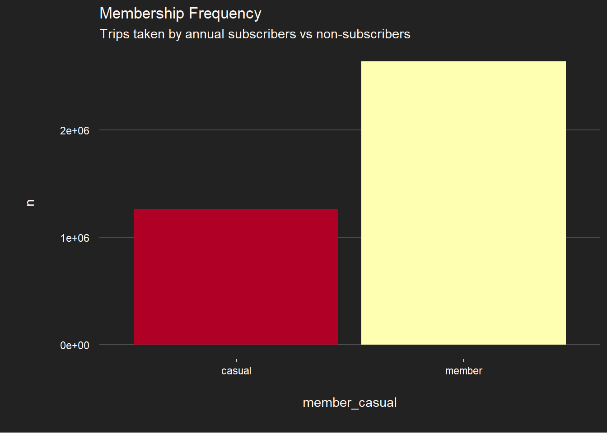
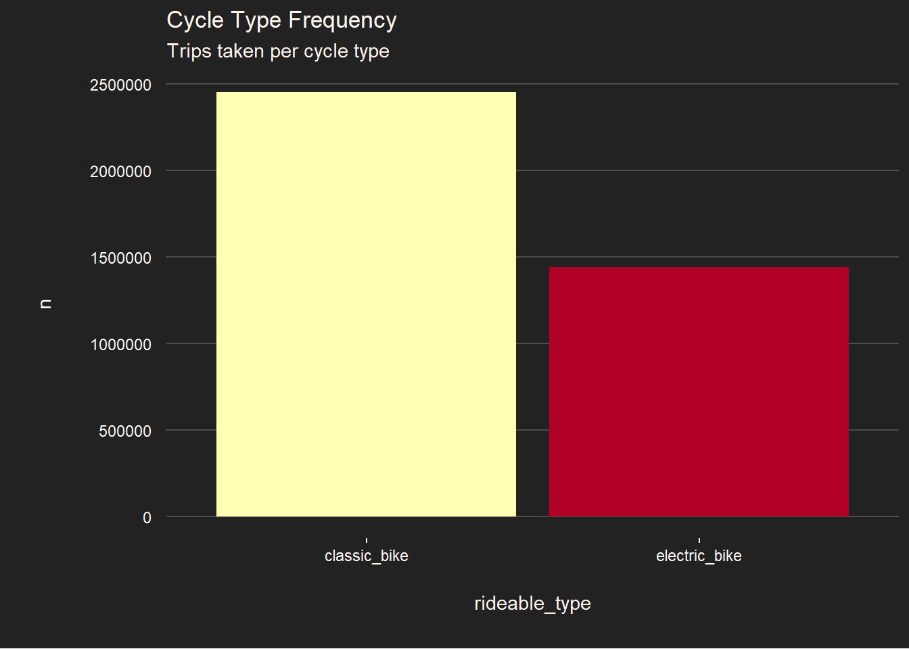
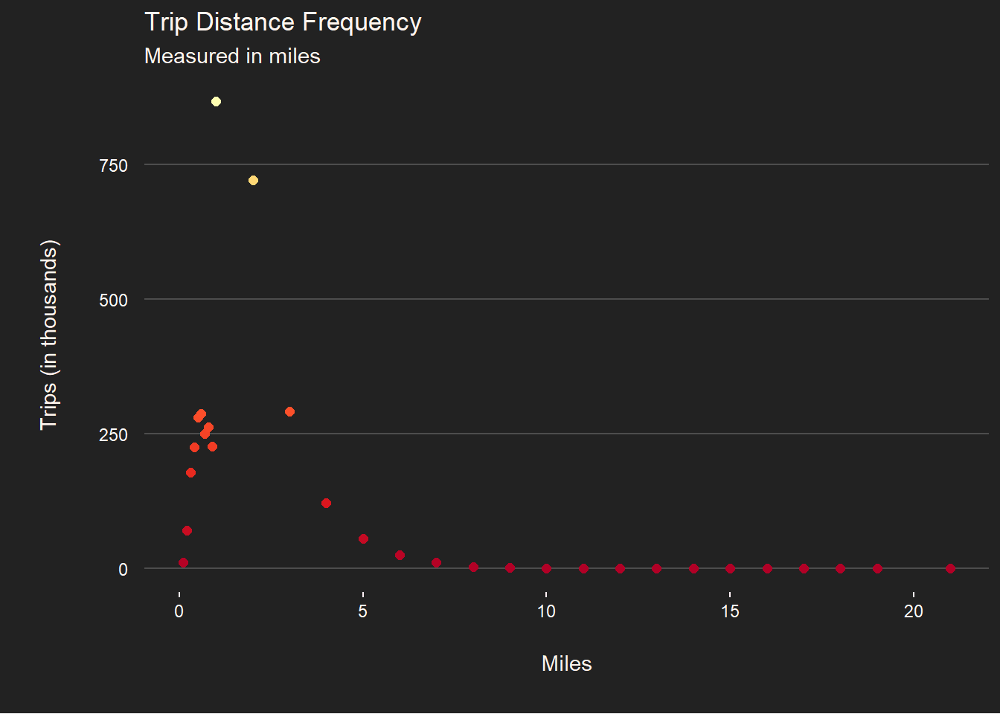

First, we decide whether to download and do the necessary initial processing steps or skip that if we have already done this and are just tinkering around with the project.
if(exists("dbconn")==FALSE&&dir.exists("db")==FALSE){# Script to keep this document less cluttered.source("import_clean_initial.R")}else{# You will have to change original_nobs if you use # different data. It helps with tinkering when # you want to skip the import step.original_nobs<-as.integer(5719877)tblPath<-"db/data.db"dbconn<-DBI::dbConnect(duckdb::duckdb(), dbdir =tblPath, read_only =FALSE, check_from =FALSE)}
The above would source and execute this script code if the conditions were met.
# To help organize the quarto project.# This part is messy. # Load external librariessource("unz_relocate.R")durls<-sprintf("https://divvy-tripdata.s3.amazonaws.com/%d-divvy-tripdata.zip",202301:202312)# Need some directories to store the files. dir.create("tempZips")tempZipPaths<-sprintf("tempZips/%d-divvy-tripdata.zip",202301:202312)# A simple way to download and relocate several files. curl::multi_download(durls, destfiles =tempZipPaths)# create tempFile directorydir.create("tempFiles")# create list of tempFile directory pathstempfile_paths<-sprintf("tempFiles/%d-divvy-tripdata.csv",202301:202312)# create CSV list to specify for unzippingfileNames<-sprintf("%d-divvy-tripdata.csv",202301:202312)# review address info that was just created#tibble::tibble("URLs" = durls,# "Zip File Paths" = tempZipPaths,# "File Names" = fileNames,# "Parquet File Paths" = tempfile_paths)unz_relocate()# To remove stored filesunlink("tempZips", recursive =TRUE)tripTibble<-purrr::map(tempfile_paths[1:12],arrow::read_csv_arrow)|>purrr::list_rbind()# Need to save this count for later before I drop the incomplete obsoriginal_nobs<-nrow(tripTibble)tripTibble<-tripTibble|>tidyr::drop_na()# duckDB instead ----dir.create("db")tblPath<-"db/data.db"# Helpful persistent dbdbconn<-DBI::dbConnect(duckdb::duckdb(), dbdir =tblPath, read_only =FALSE, check_from =FALSE)tripTibble|>duckdb::dbWriteTable(conn =dbconn, name =tblPath, overwrite =TRUE, check_from =FALSE)rm(tripTibble)# To make use of supplied trip interval datadplyr::tbl(dbconn,tblPath, check_from =FALSE)|>dplyr::collect()|>dplyr::mutate("trip_time"=lubridate::time_length(lubridate::interval(started_at,ended_at), unit ="minute"), .keep ="all")|>duckdb::dbWriteTable(conn =dbconn, name =tblPath, overwrite =TRUE, check_from =FALSE)# all files and foldersunlink("tempFiles", recursive =TRUE)
It would be helpful to verify the tables that were made.
dbList<-duckdb::dbListTables(dbconn)|>data.frame()|>gt::gt()|>gt::tab_header( title ="Database Tables", subtitle ="List of table paths in our DuckDB")|>gt::cols_label("duckdb..dbListTables.dbconn."="Table Paths")|>gt::tab_options( table.background.color ="transparent", table.font.color ="SeaShell", column_labels.hidden =TRUE, row.striping.background_color ="gray10", row.striping.include_table_body =TRUE, table.font.size =gt::px(13))
Database Tables
List of table paths in our DuckDB
db/data.db
db/data_fltrd.db
db/dupeless.db
db/freq_member.db
db/freq_miles.db
db/freq_month.db
db/freq_mph.db
db/freq_pairStations.db
db/freq_rTypes.db
db/freq_startNames.db
db/freq_tripTime.db
db/freq_wkDay.db
Data source for this data analysis was obtained from Divvy Data. Thinking ahead with reproducibility in mind, should cover most use cases for tinkering and testing. I have found it helpful to reduce the need to re-download files and re-process all over again if all one needs to do is reconnect to the database that has already been written. (“Divvy Data,” n.d.)
As a counterpart to the if-else design decision at the top of the project, I’ve condensed the initial download, import and cleaning steps inside of an R-script. Choosing a persistent DuckDB filesystem (as opposed to in-memory) was intentional as I wouldn’t lose the progress I’ve made when tinkering over multiple days. It seems just as fast as the in-memory database but also seems to reduce RAM needed in tinkering. (“Why DuckDB,” n.d.)
Hidden Duplicates?
Now to go a little deeper, we can check for duplicates. It might not necessarily be the case that each observation (obs) is unique even if all the Rider IDs are, technically, unique. Of the other columns, it seems that the start_time, end_time, start_station, and end_station, if combined, could show if there are possibly hidden duplicated observations. We started with 5,719,877 observations (obs) for dates spanning January to December, 2023, then removed 1,388,170 incomplete obs.
I assumed that having the same times/dates and stations for two different ride IDs was a mistake. Although, I do not know how that error would happen, I could have assumed one person could check out multiple bikes at once. In that instance, each bike would be assigned a unique ride_id. That, however, has only happened 18 times over a year. Since it’s only one copy every time, that also raises a red flag in my mind. I did not notice any other correlations with station_id/name, member_casual, or ride_type for those particular duplicated data.
Stepping Through the Code
create gt of duplicates for illustration
# This is a separate table used to analyze the observations # returned as not distinct (n > 1). # This adds an extra column, labeled "n".dupeTable<-dplyr::tbl(dbconn,tblPath, check_from =FALSE)|>dplyr::select(started_at:end_station_name)|># Counts of unique rows added for column 'n'dplyr::add_count(started_at,ended_at,start_station_name,end_station_name)|># Only observations that have been duplicated # 1 or more times are shown.dplyr::filter(n>1)|># We want to see all rows, # not just one row for each obs.dplyr::ungroup()|>dplyr::arrange(started_at)|>dplyr::collect()
# The issue is, we need to get rid of not all of these rows,# but just the extra duplicate observations. # If there were 2 rows of duplicates, # we would want to end up with 1 row after # removing the extras.undupedTable<-dupeTable|>dplyr::distinct(started_at,start_station_name,ended_at,end_station_name, .keep_all =TRUE)
count of incorrect obs
# Run an incorrect count on how many rows or observations # there are in the dataset.count_incorrectDists<-dplyr::tbl(dbconn,tblPath, check_from =FALSE)|>dplyr::distinct(dplyr::pick("ride_id"))|>dplyr::count(name ="Incorrect Distinct Observations")|>dplyr::collect()|>as.integer()
count of correct obs
# For the correct count of obscount_correctDists<-dplyr::tbl(dbconn,tblPath, check_from =FALSE)|>dplyr::distinct(dplyr::pick("started_at","start_station_name","ended_at","end_station_name"))|>dplyr::count()|>dplyr::collect()|>as.integer()
dplyr::tbl(dbconn,dupelessPath)|>head()|>gt::gt()|>gt::tab_header( title ="Un-Duplicated DB Table", subtitle ="Top 10 rows from the database table")|>gt::tab_style(gt::cell_borders(sides =c("left", "right"), color ="gray20", weight =gt::px(1)), locations =list(gt::cells_body(columns =gt::everything())))|>gt::tab_options( table.background.color ="transparent", table.font.color ="SeaShell", row.striping.background_color ="gray10", row.striping.include_table_body =TRUE, table_body.hlines.color ="gray20", table_body.vlines.color ="gray20", table.font.size =gt::pct(75),#column_labels.border.lr.color = "gray20")
Un-Duplicated DB Table
Top 10 rows from the database table
ride_id
rideable_type
started_at
ended_at
start_station_name
start_station_id
end_station_name
end_station_id
start_lat
start_lng
end_lat
end_lng
member_casual
trip_time
D8EEE72183269F07
classic_bike
2023-01-01 00:02:06
2023-01-01 00:29:46
Fairbanks Ct & Grand Ave
TA1305000003
New St & Illinois St
TA1306000013
41.89185
-87.62058
41.89085
-87.61862
member
27.666667
E5AD797A579842F8
electric_bike
2023-01-01 00:03:26
2023-01-01 00:07:23
Sheridan Rd & Loyola Ave
RP-009
Sheridan Rd & Loyola Ave
RP-009
42.00114
-87.66126
42.00104
-87.66120
casual
3.950000
8FBD2AD70B0F6A6F
classic_bike
2023-01-01 00:04:07
2023-01-01 00:13:56
Leavitt St & Lawrence Ave
TA1309000015
Broadway & Argyle St
13108
41.96889
-87.68400
41.97382
-87.65966
casual
9.816667
B05BD052B9EBB767
electric_bike
2023-01-01 00:04:27
2023-01-01 00:16:52
Clark St & Montrose Ave
KA1503000022
Clark St & Montrose Ave
KA1503000022
41.96154
-87.66619
41.96159
-87.66604
member
12.416667
F9EA7B9E6C243CFC
classic_bike
2023-01-01 00:04:54
2023-01-01 00:31:52
State St & Randolph St
TA1305000029
Indiana Ave & Roosevelt Rd
SL-005
41.88462
-87.62783
41.86789
-87.62304
member
26.966667
27C2A67184C49D01
electric_bike
2023-01-01 00:05:43
2023-01-01 00:21:37
Wabash Ave & Grand Ave
TA1307000117
Streeter Dr & Grand Ave
13022
41.89151
-87.62686
41.89228
-87.61204
member
15.900000
Code
# To see the history of obs in our dataset.summaryProcessTable<-tidyr::tribble(~"Observations",~"Counts","Original ",original_nobs,"Processed ",count_incorrectDists,"Duplicates ",(count_incorrectDists-count_correctDists),"Total Corrected ",count_correctDists)|>gt::gt(rownames_to_stub =FALSE)|>gt::tab_header(title ="Tallying Observations")|>gt::tab_footnote( footnote =gt::md("Row counts throughout the cleaning steps."), locations =gt::cells_column_labels(columns =Counts))|>gt::tab_style( style =list(gt::cell_borders(sides ="bottom"),gt::cell_text( align ="left", stretch ="semi-expanded", whitespace ="break-spaces")), locations =gt::cells_body(gt::everything()))|>gt::tab_style(gt::cell_text( align ="center", stretch ="semi-expanded", whitespace ="break-spaces"), locations =list(gt::cells_title(groups =c("title", "subtitle")),gt::cells_column_labels(gt::everything())))|>gt::tab_options(quarto.use_bootstrap =TRUE, column_labels.font.weight ="bold", table.background.color ="transparent", table.font.color ="SeaShell", row.striping.background_color ="gray10", row.striping.include_table_body =TRUE)summaryProcessTable
Tallying Observations
Observations
Counts1
Original
5719877
Processed
4331707
Duplicates
18
Total Corrected
4331689
1 Row counts throughout the cleaning steps.
By applying distinct() on dupeTable, we see the only distinct value, n, is 2. I conclude that, of the duplicates, each has a minimum and maximum of 1 extra copy. Number of rows in the dupeTable is 36. Because each duplicated observation has one duplicate, n = 2, expected removed obs is 18. The issue is that we need to get rid of not all 36 rows, but just one extra duplicate observation from each. This will result in the expected 18 obs.
The count of distinct n-values for the un-duplicated table was indeed 18. So now, it is time to run a count of how rows/observations are in the dataset. There is a difference, though, concerning the correct amount. The incorrect nobs was 4,331,707. The correct nobs after removing duplicated obs was 4,331,689. In short, 18 additional obs were removed. We can now add the processed table to our database. Might be a good idea to verify the table is where it should be.
Outlier Filter
To ensure the conclusions are accurate, outliers should be filtered. Negative and very low trip times might skew trends. The underlying reason for very low trip times is somewhat of an unknown. Perhaps people often change their minds?
As in the first part, an if-else code-chunk design was chosen because it makes testing easier. It’s not required but is nice-to-have. Removing the nonsensical outliers, on the other hand, is required. This code chunk accomplishes both, regardless if you are just testing and already have the filtered database table or if you still need to create it. A database filtering script was used to make the code chunk easier to follow. We then verify the table does exist now along with all other tables we previously created. So this should have removed outliers from the dataset which don’t serve the scope of this analysis or could be erroneous data.
This would execute if the if-else conditions were met to filter the db/data.db database table
filterDatabase<-function(conxn=dbconn,path1=dupelessPath,path2=tblPath_fltrd){dplyr::tbl(conxn,path1, check_from =FALSE)|>dplyr::filter(trip_time>1,trip_time<480,rideable_type!="docked_bike")|>dplyr::collect()|># Might as well calculate distance traveled while at it.dplyr::mutate( miles =geosphere::distGeo( p1 =cbind(start_lng, start_lat), p2 =cbind(end_lng, end_lat))/1000*0.62137119, mph =(miles/(trip_time/60)))|># It's nonsensical to rent a bike for distances easily walked.dplyr::filter(miles>0.1,# Seems that pro cyclists average around 20 mph,# so I set that as the ceiling.mph<=20,# To account for time spent idling, stoplights and# traffic.mph>1)|>duckdb::dbWriteTable( conn =conxn, name =path2, overwrite =TRUE, check_from =FALSE)}
Stepping Through the Code
So you do not have to re-download or re-filter after making further adjustments. This is for people who re-use this code.
Now we’re going to create frequency tables and add those to the database. We can retain the outliers in those tables and perhaps filter as needed later. This is a good place start. If needed, we can dive deeper into other statistical techniques or adjust parameters in these code chunks and overwrite or create new db tables. By generating frequency tables, one can quickly glean insights from the data.
Stepping Through the Code
Writing frequency tables to DuckDB.
# For the membership frequencydplyr::tbl(dbconn,tblPath_fltrd, check_from =FALSE)|>dplyr::select(member_casual)|>dplyr::group_by(member_casual)|>dplyr::summarize(n =dplyr::n())|>dplyr::collect()|>duckdb::dbWriteTable(conn =dbconn, name ="db/freq_member.db", overwrite =TRUE, check_from =FALSE)# For the rideable types.dplyr::tbl(dbconn,tblPath_fltrd, check_from =FALSE)|>dplyr::select(rideable_type)|>dplyr::group_by(rideable_type)|>dplyr::summarize(n =dplyr::n())|>dplyr::collect()|>duckdb::dbWriteTable(conn =dbconn, name ="db/freq_rTypes.db", overwrite =TRUE, check_from =FALSE)# For the milesdplyr::tbl(dbconn,tblPath_fltrd, check_from =FALSE)|>dplyr::select(miles)|>dplyr::collect()|>dplyr::mutate(miles =dplyr::case_when(miles>=1~round(miles, digits =0),miles<1~round(signif(miles, 3), digits =1)))|>dplyr::group_by(miles)|>dplyr::summarize(n =dplyr::n())|>dplyr::arrange(miles)|>duckdb::dbWriteTable( conn =dbconn, name ="db/freq_miles.db", check_from =FALSE, overwrite =TRUE)# For the mphdplyr::tbl(dbconn,tblPath_fltrd, check_from =FALSE)|>dplyr::select(mph)|>dplyr::mutate(mph =round(mph, digits =0))|>dplyr::group_by(mph)|>dplyr::summarize(n =dplyr::n())|>dplyr::collect()|>dplyr::arrange(mph)|>duckdb::dbWriteTable(conn =dbconn, name ="db/freq_mph.db", check_from =FALSE, overwrite =TRUE)# For the week daysdplyr::tbl(dbconn,tblPath_fltrd, check_from =FALSE)|>dplyr::select(started_at)|>dplyr::mutate(wkday =lubridate::wday(started_at))|>dplyr::group_by(wkday)|>dplyr::summarize(n =dplyr::n())|>dplyr::arrange(wkday)|>dplyr::collect()|>dplyr::mutate(wkday =c("Sun","Mon","Tue","Wed","Thu","Fri","Sat"), wkday =forcats::as_factor(wkday), wkday =forcats::fct_inorder(wkday))|>duckdb::dbWriteTable(conn =dbconn, name ="db/freq_wkDay.db", check_from =FALSE, overwrite =TRUE)# For the months.dplyr::tbl(dbconn,tblPath_fltrd, check_from =FALSE)|>dplyr::select(started_at)|>dplyr::mutate(months =lubridate::month(started_at, label =FALSE, abbr =TRUE))|>dplyr::group_by(months)|>dplyr::summarize(n =dplyr::n())|>dplyr::collect()|>dplyr::arrange(months)|>dplyr::mutate(months =c(month.abb), months =forcats::as_factor(months), months =forcats::fct_inorder(months))|>duckdb::dbWriteTable(conn =dbconn, name ="db/freq_month.db", check_from =FALSE, overwrite =TRUE)# For the trip times.dplyr::tbl(dbconn,tblPath_fltrd)|>dplyr::mutate(trip_time =round(trip_time, digits =0))|>dplyr::group_by(trip_time)|>dplyr::summarize(n =dplyr::n())|>dplyr::arrange(trip_time)|>dplyr::collect()|>duckdb::dbWriteTable(conn =dbconn, name ="db/freq_tripTime.db", check_from =FALSE, overwrite =TRUE)# For the start station namesdplyr::tbl(dbconn,tblPath_fltrd)|>dplyr::select(start_station_name)|>dplyr::group_by(start_station_name)|>dplyr::summarize(n =dplyr::n())|>dplyr::arrange(start_station_name)|>dplyr::collect()|>duckdb::dbWriteTable(conn =dbconn, name ="db/freq_startNames.db", check_from =FALSE, overwrite =TRUE)# For the station name pairs.dplyr::tbl(dbconn,tblPath_fltrd)|>dplyr::select(start_station_name,end_station_name)|>dplyr::group_by(start_station_name,end_station_name)|>dplyr::summarize(n =dplyr::n())|>dplyr::arrange(start_station_name)|>dplyr::collect()|>duckdb::dbWriteTable(conn =dbconn, name ="db/freq_pairStations.db", check_from =FALSE, overwrite =TRUE)
There are nearly twice as many trips taken by annual subscribers than by casual users. Maybe there is a relationship between how often a person uses Divvy Bikes service and whether they make the decision to subscribe to an annual membership plan.
member_freqTbl<-dplyr::tbl(dbconn,"db/freq_member.db")|>dplyr::collect()member_freqTbl|>ggplot2::ggplot(mapping =ggplot2::aes(x =member_casual, y =n, fill =n))+ggplot2::geom_col(show.legend =FALSE)+ggplot2::labs(title ="Membership Frequency", subtitle ="Trips taken by annual subscribers vs non-subscribers")+ggplot2::scale_fill_distiller(palette ="YlOrRd")+ggplot2::theme( panel.background =ggplot2::element_rect(fill ="#222222", color =NA), plot.background =ggplot2::element_rect(fill ="#222222", color =NA), text =ggplot2::element_text(color ="seashell"), panel.grid =ggplot2::element_blank(), axis.title.x =ggplot2::element_text(margin =grid::unit(c(5, 5, 5, 5), "mm")), axis.title.y =ggplot2::element_text(margin =grid::unit(c(5, 5, 5, 5), "mm")), axis.text.x =ggplot2::element_text(color ="Snow", margin =grid::unit(c(1, 1, 1, 1), "mm")), axis.text.y =ggplot2::element_text(color ="Snow", margin =grid::unit(c(2, 2, 2, 2), "mm")), axis.ticks =ggplot2::element_line(color ="LavenderBlush"), axis.ticks.y =ggplot2::element_blank(), panel.grid.major.y =ggplot2::element_line(color ="grey30"))

CYCLE TYPES
There are nearly twice as many trips taken with non-electric bikes as electric bikes. Perhaps, the associated health benefits with exercise would help explain higher non-electric bicycle use?
Code
dplyr::tbl(dbconn,"db/freq_rTypes.db")|>gt::gt()|>gt::tab_header( title ="Bicycle Type Frequency", subtitle ="Counts trips taken by cycle type")|>gt::tab_options( table.background.color ='transparent', table.font.color ="SeaShell", table_body.vlines.color ="gray20", table_body.hlines.color ="gray20", column_labels.hidden =TRUE)
Bicycle Type Frequency
Counts trips taken by cycle type
electric_bike
1443673
classic_bike
2453725
Code
ridetype_freqTbl<-dplyr::tbl(dbconn,"db/freq_rTypes.db")|>dplyr::collect()ridetype_freqTbl|>ggplot2::ggplot(mapping =ggplot2::aes(x =rideable_type, y =n, fill =n))+ggplot2::geom_col(show.legend =FALSE)+ggplot2::scale_fill_distiller(palette ="YlOrRd")+ggplot2::labs(title ="Cycle Type Frequency", subtitle ="Trips taken per cycle type")+ggplot2::theme( panel.background =ggplot2::element_rect(fill ="#222222", color =NA), plot.background =ggplot2::element_rect(fill ="#222222", color =NA), text =ggplot2::element_text(color ="seashell"), panel.grid =ggplot2::element_blank(), axis.title.x =ggplot2::element_text(margin =grid::unit(c(5, 5, 5, 5), "mm")), axis.title.y =ggplot2::element_text(margin =grid::unit(c(5, 5, 5, 5), "mm")), axis.text.x =ggplot2::element_text(color ="Snow", margin =grid::unit(c(1, 1, 1, 1), "mm")), axis.text.y =ggplot2::element_text(color ="Snow", margin =grid::unit(c(2, 2, 2, 2), "mm")), axis.ticks =ggplot2::element_line(color ="LavenderBlush"), axis.ticks.y =ggplot2::element_blank(), panel.grid.major.y =ggplot2::element_line(color ="grey30"))

MONTHS
Trips by month does differ substantially between certain months. late Spring , Summer, to early Fall months in Chicago is when we see the largest increase in ridership. Most likely the ambient temperature is a major contributor for the seasonal patterns in trips taken.
Code
dplyr::tbl(dbconn,"db/freq_month.db")|>gt::gt()|>gt::tab_header( title ="Monthly Trips Frequency", subtitle ="Tallies trips taken by month")|>gt::tab_options( table.background.color ='transparent', table.font.color ="SeaShell", table_body.vlines.color ="gray20", table_body.hlines.color ="gray20", column_labels.hidden =TRUE)
Monthly Trips Frequency
Tallies trips taken by month
Jan
136886
Feb
136818
Mar
183129
Apr
286343
May
408373
Jun
474756
Jul
502519
Aug
519423
Sep
461164
Oct
374268
Nov
257513
Dec
156206
Code
monthlyTable<-dplyr::tbl(dbconn,"db/freq_month.db")|>dplyr::collect()monthlyTable|>ggplot2::ggplot(mapping =ggplot2::aes(x =months, y =n, fill =n))+ggplot2::geom_col(show.legend =FALSE)+ggplot2::labs(title ="Monthly Trip Frequency", subtitle ="A total count of trips taken by month")+ggplot2::scale_fill_distiller(palette ="YlOrRd")+ggplot2::theme( panel.background =ggplot2::element_rect(fill ="#222222", color =NA), plot.background =ggplot2::element_rect(fill ="#222222", color =NA), text =ggplot2::element_text(color ="seashell"), panel.grid =ggplot2::element_blank(), axis.title.x =ggplot2::element_text(margin =grid::unit(c(5, 5, 5, 5), "mm")), axis.title.y =ggplot2::element_text(margin =grid::unit(c(5, 5, 5, 5), "mm")), axis.text.x =ggplot2::element_text(color ="Snow", margin =grid::unit(c(1, 1, 1, 1), "mm")), axis.text.y =ggplot2::element_text(color ="Snow", margin =grid::unit(c(2, 2, 2, 2), "mm")), axis.ticks =ggplot2::element_line(color ="LavenderBlush"), axis.ticks.y =ggplot2::element_blank(), panel.grid.major.y =ggplot2::element_line(color ="grey30"))
DAY OF WEEK
There is a slight reduction in trips taken on Sundays and Mondays. This could be explained by the fact that most trips are taken by annual subscribers, possibly because they are commuting to work and such. So, much less people will be biking to work on Sundays. Taking 3-day weekends is common in the workplace, where most would likely opt to use up their sick/vacation days on Monday. That might explain the down tick in trips taken on Mondays. Also, those who are working Tuesdays-Saturdays could be taking Sunday and Mondays off.
Code
dplyr::tbl(dbconn,"db/freq_wkday.db")|>gt::gt()|>gt::tab_header( title ="Weekday Trip Frequency", subtitle ="Tallies trips taken by the day of the week")|>gt::tab_options( table.background.color ='transparent', table.font.color ="SeaShell", table_body.vlines.color ="gray20", table_body.hlines.color ="gray20", column_labels.hidden =TRUE)
Weekday Trip Frequency
Tallies trips taken by the day of the week
Sun
486275
Mon
507355
Tue
578095
Wed
585266
Thu
597363
Fri
566008
Sat
577036
Code
weekdayTable<-dplyr::tbl(dbconn,"db/freq_wkday.db")|>dplyr::collect()weekdayPlot<-weekdayTable|>ggplot2::ggplot(mapping =ggplot2::aes(x =wkday, y =n, fill =n))+ggplot2::coord_cartesian(ylim =c(4*10^5, NA))+ggplot2::geom_col(show.legend =FALSE)+ggplot2::labs(title ="Weekday Trip Frequency", subtitle ="Trips by day of week")+ggplot2::scale_fill_distiller(palette ="YlOrRd")+ggplot2::theme( panel.background =ggplot2::element_rect(fill ="#222222", color =NA), plot.background =ggplot2::element_rect(fill ="#222222", color =NA), text =ggplot2::element_text(color ="seashell"), panel.grid =ggplot2::element_blank(), axis.title.x =ggplot2::element_text(margin =grid::unit(c(5, 5, 5, 5), "mm")), axis.title.y =ggplot2::element_text(margin =grid::unit(c(5, 5, 5, 5), "mm")), axis.text.x =ggplot2::element_text(color ="Snow", margin =grid::unit(c(1, 1, 1, 1), "mm")), axis.text.y =ggplot2::element_text(color ="Snow", margin =grid::unit(c(2, 2, 2, 2), "mm")), axis.ticks =ggplot2::element_line(color ="LavenderBlush"), axis.ticks.y =ggplot2::element_blank(), panel.grid.major.y =ggplot2::element_line(color ="grey30"))weekdayPlot
MILES
This shows that around 0.3 to 3 miles is the distance traveled on most trips taken. The fact that casual bicycles are used more often perhaps makes a little more sense considering that people are not traveling long distances.
Code
dplyr::tbl(dbconn,"db/freq_miles.db")|>dplyr::arrange(desc(n))|>head(n =10)|>gt::gt()|>gt::tab_header( title ="Trip Distance Frequency", subtitle ="Distance is measured in miles")|>gt::tab_options( table.background.color ='transparent', table.font.color ="SeaShell", table_body.vlines.color ="gray20", table_body.hlines.color ="gray20")
Trip Distance Frequency
Distance is measured in miles
miles
n
1.0
867678
2.0
720842
3.0
292483
0.6
288164
0.5
280367
0.8
262418
0.7
250369
0.9
227646
0.4
225723
0.3
178150
Code
milesTable<-dplyr::tbl(dbconn,"db/freq_miles.db")|>dplyr::collect()|>dplyr::mutate(n =n/1000)|>dplyr::rename("Trips (in thousands)"=n,"Miles"=miles)milesPlot<-milesTable|>ggplot2::ggplot(mapping =ggplot2::aes(x =Miles, y =`Trips (in thousands)`, color =`Trips (in thousands)`))+ggplot2::geom_point(show.legend =FALSE, size =2)+#ggplot2::scale_size_area() +ggplot2::scale_color_distiller(palette ="YlOrRd")+ggplot2::labs(title ="Trip Distance Frequency", subtitle ="Measured in miles")+ggplot2::theme( panel.background =ggplot2::element_rect(fill ="#222222", color =NA), plot.background =ggplot2::element_rect(fill ="#222222", color =NA), text =ggplot2::element_text(color ="seashell"), panel.grid =ggplot2::element_blank(), axis.title.x =ggplot2::element_text(margin =grid::unit(c(5, 5, 5, 5), "mm")), axis.title.y =ggplot2::element_text(margin =grid::unit(c(5, 5, 5, 5), "mm")), axis.text.x =ggplot2::element_text(color ="Snow", margin =grid::unit(c(1, 1, 1, 1), "mm")), axis.text.y =ggplot2::element_text(color ="Snow", margin =grid::unit(c(2, 2, 2, 2), "mm")), axis.ticks =ggplot2::element_line(color ="LavenderBlush"), axis.ticks.y =ggplot2::element_blank(), panel.grid.major.y =ggplot2::element_line(color ="grey30"))milesPlot

MPH
The most common overall mph for trips fall in between 2-11 mph. This is what we might expect for city travel.
Code
dplyr::tbl(dbconn,"db/freq_mph.db")|>gt::gt()|>gt::tab_header( title ="Mean Speed Frequency", subtitle ="Calculated average speed over the duration of the trip")|>gt::tab_options( table.background.color ='transparent', table.font.color ="SeaShell", table_body.vlines.color ="gray20", table_body.hlines.color ="gray20", column_labels.hidden =TRUE)
Mean Speed Frequency
Calculated average speed over the duration of the trip
1
45485
2
106779
3
161520
4
278819
5
460475
6
622275
7
647253
8
546353
9
399237
10
265438
11
165825
12
99529
13
55660
14
27274
15
11165
16
3354
17
714
18
138
19
69
20
36
Code
mphTable<-dplyr::tbl(dbconn,"db/freq_mph.db")|>dplyr::collect()mphPlot<-mphTable|>ggplot2::ggplot(mapping =ggplot2::aes(x =mph, y =n, color =n))+ggplot2::geom_point(show.legend =FALSE)+ggplot2::labs(title ="Mean Speed Frequency", subtitle ="Calculated average speed over the duration of the trip")+ggplot2::scale_color_distiller(palette ="YlOrRd")+ggplot2::theme( panel.background =ggplot2::element_rect(fill ="#222222", color =NA), plot.background =ggplot2::element_rect(fill ="#222222", color =NA), text =ggplot2::element_text(color ="seashell"), panel.grid =ggplot2::element_blank(), axis.title.x =ggplot2::element_text(margin =grid::unit(c(5, 5, 5, 5), "mm")), axis.title.y =ggplot2::element_text(margin =grid::unit(c(5, 5, 5, 5), "mm")), axis.text.x =ggplot2::element_text(color ="Snow", margin =grid::unit(c(1, 1, 1, 1), "mm")), axis.text.y =ggplot2::element_text(color ="Snow", margin =grid::unit(c(2, 2, 2, 2), "mm")), axis.ticks =ggplot2::element_line(color ="LavenderBlush"), axis.ticks.y =ggplot2::element_blank(), panel.grid.major.y =ggplot2::element_line(color ="grey30"))mphPlot
TRIP-TIMES
The time riders are usually spending on these trips lies in between 5-15 minutes.
Code
dplyr::tbl(dbconn,"db/freq_tripTime.db")|>dplyr::collect()|>dplyr::arrange(desc(n))|>head(n =20)|>gt::gt()|>gt::tab_header( title ="Trip Duration Frequency", subtitle ="Tallies the duration of time people rent cycles for")|>gt::tab_options( table.background.color ='transparent', table.font.color ="SeaShell", table_body.vlines.color ="gray20", table_body.hlines.color ="gray20", column_labels.hidden =TRUE)
Trip Duration Frequency
Tallies the duration of time people rent cycles for
Now we need to obtain statistics but also combine the statistics for every unique station name.
locationData<-dplyr::tbl(dbconn,tblPath_fltrd)|>dplyr::select(start_station_name,end_station_name,started_at,ended_at,trip_time)|>dplyr::group_by(start_station_name,end_station_name)|>dplyr::mutate("trip_time"=round(trip_time, digits =0))|>dplyr::summarize("trip_count"=dplyr::n(),"first_date"=min(started_at),"last_date"=max(ended_at),"avg_trip_time"=mean(trip_time))|>dplyr::ungroup()|>dplyr::rename("from_station"=start_station_name,"to_station"=end_station_name)|>dplyr::arrange(desc(trip_count))|>dplyr::collect()# Need to combine all names to single column and recalculate # or retain other stats.locationData_pivoted<-locationData|>tidyr::pivot_longer(cols =1:2, values_to ="allNames")|>dplyr::group_by(allNames)|>dplyr::summarize("trips_toAndfrom"=sum(trip_count), first_date =min(first_date), last_date =max(last_date), avg_trip_time =mean(avg_trip_time))|>dplyr::mutate(avg_trip_time =round(avg_trip_time, digits =0))|>dplyr::arrange(trips_toAndfrom)
# A tibble: 50 × 3
from_station to_station n
<chr> <chr> <dbl>
1 Ellis Ave & 60th St Ellis Ave & 55th St 6927
2 Ellis Ave & 60th St University Ave & 57th St 6600
3 Ellis Ave & 55th St Ellis Ave & 60th St 6349
4 University Ave & 57th St Ellis Ave & 60th St 6168
5 Calumet Ave & 33rd St State St & 33rd St 5417
6 State St & 33rd St Calumet Ave & 33rd St 5343
7 DuSable Lake Shore Dr & Monroe St Streeter Dr & Grand Ave 4023
8 Loomis St & Lexington St Morgan St & Polk St 3719
9 Morgan St & Polk St Loomis St & Lexington St 3379
10 University Ave & 57th St Kimbark Ave & 53rd St 3112
# ℹ 40 more rows
There isn’t much of a difference between annual subscriber and casual trip behavior other than trip frequency. Annual subs are people who ride more frequently. Looking into where the main activity is, you can see that they are near stores, schools, and such.
---title: "Case study: Bike-sharing program in the chicago area"author: "Eric Mossotti"date: "05-01-2024"bibliography: references.bibrepo: https://github.com/ericMossotti/Bike_Sharesource: index.qmdabstract-title: "Objective"abstract: "Communicate data-driven insights to stakeholders."description-meta: "Communicate data-driven insights to stakeholders."code-links: - text: "Project Repo" href: repocode-fold: truecode-copy: hovercode-overflow: wrapcode-tools: truecode-link: truetoc: true#toc_float: truesmooth-scroll: truefig-responsive: trueecho: true#margin-left: 10vw#margin-right: 5vw#margin-top: 5vh#margin-bottom: 5vh#font: merriweather, futura---```{r, include = FALSE}knitr::opts_chunk$set(message = FALSE, warning = FALSE)```## Import and Project Design:::::::::: {#offcanvas1 .offcanvas .offcanvas-end tabindex="-1" aria-labelledby="offcanvas" style="width: auto"}::::::::: offcanvas-header:::::::: {#offcanvasLabel .h5 .offcanvas-title}Stepping Through Code:::::::::::::::: {.btn-close type="button" data-bs-dismiss="offcanvas" ariaLabel="Close"}:::::::::::::::::::::::::: offcanvas-body:::::::: flex-code```{r}#| label: importOrConnect#| code-summary: First, we decide whether to download and do the necessary initial processing steps or skip that if we have already done this and are just tinkering around with the project. if(exists("dbconn") ==FALSE&&dir.exists("db") ==FALSE) {# Script to keep this document less cluttered.source("import_clean_initial.R")} else {# You will have to change original_nobs if you use # different data. It helps with tinkering when # you want to skip the import step. original_nobs <-as.integer(5719877) tblPath <-"db/data.db" dbconn <- DBI::dbConnect( duckdb::duckdb(),dbdir = tblPath,read_only =FALSE,check_from =FALSE )}``````{r}#| label: importProcessScript#| code-summary: The above would source and execute this script code if the conditions were met.#| file: "import_clean_initial.R"#| eval: false ``````{r}#| label: dbList#| code-summary: It would be helpful to verify the tables that were made.dbList <- duckdb::dbListTables(dbconn) |>data.frame() |> gt::gt() |> gt::tab_header(title ="Database Tables",subtitle ="List of table paths in our DuckDB") |> gt::cols_label("duckdb..dbListTables.dbconn."="Table Paths" ) |> gt::tab_options(table.background.color ="transparent",table.font.color ="SeaShell",column_labels.hidden =TRUE,row.striping.background_color ="gray10",row.striping.include_table_body =TRUE,table.font.size = gt::px(13) )``````{r}#| label: view_dbList#| code-summary: Executes the table view from object created before.#| echo: falsedbList```:::::::::::::::::::::::::::Data source for this data analysis was obtained from Divvy Data. Thinking ahead with reproducibility in mind, should cover most use cases for tinkering and testing. I have found it helpful to reduce the need to re-download files and re-process all over again if all one needs to do is reconnect to the database that has already been written. [@divvyda]As a counterpart to the if-else design decision at the top of the project, I've condensed the initial download, import and cleaning steps inside of an R-script. Choosing a persistent DuckDB filesystem (as opposed to in-memory) was intentional as I wouldn't lose the progress I've made when tinkering over multiple days. It seems just as fast as the in-memory database but also seems to reduce RAM needed in tinkering. [@whyduck]:::: {.d-flex .justify-content-center}::: {.btn .btn-secondary type="button" data-bs-toggle="offcanvas" data-bs-target="#offcanvas1" aria-controls="offcanvas"}```{=html}<i class="bi bi-code-slash" style="font-size: 1.5rem; color: cornflowerblue"></i>```:::::::## Hidden Duplicates?Now to go a little deeper, we can check for duplicates. It might not necessarily be the case that each observation (obs) is unique even if all the Rider IDs are, technically, unique. Of the other columns, it seems that the start_time, end_time, start_station, and end_station, if combined, could show if there are possibly hidden duplicated observations. We started with 5,719,877 observations (obs) for dates spanning January to December, 2023, then removed 1,388,170 incomplete obs.I assumed that having the same times/dates and stations for two different ride IDs was a mistake. Although, I do not know how that error would happen, I could have assumed one person could check out multiple bikes at once. In that instance, each bike would be assigned a unique ride_id. That, however, has only happened 18 times over a year. Since it's only one copy every time, that also raises a red flag in my mind. I did not notice any other correlations with station_id/name, member_casual, or ride_type for those particular duplicated data.:::::::::: {#offcanvas2 .offcanvas .offcanvas-end tabindex="-1" aria-labelledby="offcanvas" style="width: auto"}::::::::: offcanvas-header:::::::: {.h5 .offcanvas-title}Stepping Through the Code:::::::::::::::: {.btn-close type="button" data-bs-dismiss="offcanvas" ariaLabel="Close"}:::::::::::::::::::::::::: offcanvas-body:::::::: flex-code```{r}#| label: duplicates_gt#| code-summary: create gt of duplicates for illustration# This is a separate table used to analyze the observations # returned as not distinct (n > 1). # This adds an extra column, labeled "n".dupeTable <- dplyr::tbl(dbconn, tblPath,check_from =FALSE) |> dplyr::select(started_at:end_station_name) |># Counts of unique rows added for column 'n' dplyr::add_count(started_at, ended_at, start_station_name, end_station_name) |># Only observations that have been duplicated # 1 or more times are shown. dplyr::filter(n >1) |># We want to see all rows, # not just one row for each obs. dplyr::ungroup() |> dplyr::arrange(started_at) |> dplyr::collect()``````{r}#| label: duplicateObs count#| code-summary: To count distinct duplicates and total obs.distinctCopiesCount <- dupeTable |> dplyr::distinct(n) |>as.integer() duplicateObs <-length(dupeTable[[1]])``````{r}#| label: undupedTable#| code-summary: create table of the duplicated obs# The issue is, we need to get rid of not all of these rows,# but just the extra duplicate observations. # If there were 2 rows of duplicates, # we would want to end up with 1 row after # removing the extras.undupedTable <- dupeTable |> dplyr::distinct(started_at, start_station_name, ended_at, end_station_name,.keep_all =TRUE)``````{r}#| label: incorrect distinct obs count#| code-summary: count of incorrect obs# Run an incorrect count on how many rows or observations # there are in the dataset.count_incorrectDists <- dplyr::tbl(dbconn, tblPath,check_from =FALSE) |> dplyr::distinct(dplyr::pick("ride_id")) |> dplyr::count(name ="Incorrect Distinct Observations") |> dplyr::collect() |>as.integer()``````{r}#| label: count_correctDists count#| code-summary: count of correct obs# For the correct count of obscount_correctDists <- dplyr::tbl(dbconn, tblPath,check_from =FALSE) |> dplyr::distinct( dplyr::pick("started_at","start_station_name","ended_at","end_station_name" ) ) |> dplyr::count() |> dplyr::collect() |>as.integer()``````{r}#| label: 'overwrite file with correct obs'#| code-summary: writing dupeless dbdupelessPath <-"db/dupeless.db"dplyr::tbl(dbconn, tblPath,check_from =FALSE) |> dplyr::select(ride_id:trip_time) |> dplyr::distinct(started_at, start_station_name, ended_at, end_station_name,.keep_all =TRUE) |> dplyr::arrange(started_at) |> dplyr::collect() |> duckdb::dbWriteTable(conn = dbconn,name = dupelessPath,overwrite =TRUE,check_from =FALSE)```:::::::::::::::::::::::::::::::::::::: {.column-page}:::::::::: {.panel-tabset}### Duplicates View```{r}#| label: gt table of duplicates viewgtDupes <- dupeTable |> dplyr::group_by(started_at) |> gt::gt(rowname_col ="row",groupname_col ="started_at",row_group_as_column =TRUE,caption ="Duplicates_Table1") |> gt::tab_style(style =list( gt::cell_text(weight ="bold",align ="center"), gt::cell_borders(sides =c("bottom")) ),locations = gt::cells_column_labels(gt::everything()) ) |> gt::tab_style(style =list( gt::cell_borders(sides =c("left", "right"),color ="transparent"), gt::cell_text(align ="center",v_align ="middle") ),locations = gt::cells_body(gt::everything()) ) |> gt::data_color(columns = start_station_name,target_columns = gt::everything(),method ="auto",palette ="basetheme::brutal") |> gt::tab_source_note(gt::md("**Source**: Divvy Data")) |> gt::tab_header(title ="Duplicate Observations",subtitle ="By the starting date-time") |> gt::tab_options(heading.title.font.weight ="bolder",heading.subtitle.font.weight ="lighter",table.background.color ="transparent",table.font.color ="SeaShell",table.font.size = gt::pct(75))gtDupes```### Unduplicated View```{r}#| label: unduplicatedGTundupedTable |> dplyr::collect() |> dplyr::group_by(started_at) |> gt::gt(rowname_col ="row",groupname_col ="started_at",row_group_as_column =TRUE,caption ="Table2") |> gt::tab_style(style =list( gt::cell_text(weight ="bold",align ="center"), gt::cell_borders(sides =c("bottom")) ),locations = gt::cells_column_labels(gt::everything()) ) |> gt::tab_style(style =list( gt::cell_borders(sides =c("left", "right")), gt::cell_text(align ="center",v_align ="middle") ),locations = gt::cells_body(gt::everything()) ) |> gt::data_color(columns = start_station_name,target_columns = gt::everything(),method ="auto",palette ="basetheme::brutal") |> gt::tab_source_note(gt::md("**Source**: Divvy Data")) |> gt::tab_header(title ="Un-Duplicated Observations",subtitle ="Grouped by start date)") |> gt::tab_options(heading.title.font.weight ="bolder",heading.subtitle.font.weight ="lighter",table.layout ="auto",table.background.color ="transparent",table.font.color ="SeaShell",table.font.size = gt::pct(75) )```### Verify Dupeless```{r}#| label: output_dupelessPathdplyr::tbl(dbconn, dupelessPath) |>head() |> gt::gt() |> gt::tab_header(title ="Un-Duplicated DB Table",subtitle ="Top 10 rows from the database table" ) |> gt::tab_style( gt::cell_borders(sides =c("left", "right"),color ="gray20",weight = gt::px(1)),locations =list( gt::cells_body(columns = gt::everything()) ) ) |> gt::tab_options(table.background.color ="transparent",table.font.color ="SeaShell",row.striping.background_color ="gray10",row.striping.include_table_body =TRUE,table_body.hlines.color ="gray20",table_body.vlines.color ="gray20",table.font.size = gt::pct(75),#column_labels.border.lr.color = "gray20" )```### Summary of Processsing```{r}#| label: output_summaryProcessTable# To see the history of obs in our dataset.summaryProcessTable <- tidyr::tribble(~"Observations",~"Counts","Original ", original_nobs,"Processed ", count_incorrectDists,"Duplicates ", (count_incorrectDists - count_correctDists),"Total Corrected ", count_correctDists ) |> gt::gt(rownames_to_stub =FALSE) |> gt::tab_header(title ="Tallying Observations") |> gt::tab_footnote(footnote = gt::md("Row counts throughout the cleaning steps."),locations = gt::cells_column_labels(columns = Counts) ) |> gt::tab_style(style =list( gt::cell_borders(sides ="bottom"), gt::cell_text(align ="left",stretch ="semi-expanded",whitespace ="break-spaces" ) ),locations = gt::cells_body(gt::everything()) ) |> gt::tab_style( gt::cell_text(align ="center",stretch ="semi-expanded",whitespace ="break-spaces"),locations =list( gt::cells_title(groups =c("title", "subtitle")), gt::cells_column_labels(gt::everything()) ) ) |> gt::tab_options(quarto.use_bootstrap =TRUE,column_labels.font.weight ="bold",table.background.color ="transparent",table.font.color ="SeaShell",row.striping.background_color ="gray10",row.striping.include_table_body =TRUE)summaryProcessTable```:::::::::::::::::::::::::By applying distinct() on dupeTable, we see the only distinct value, n, is 2. I conclude that, of the duplicates, each has a minimum and maximum of 1 extra copy. Number of rows in the dupeTable is 36. Because each duplicated observation has one duplicate, n = 2, expected removed obs is 18. The issue is that we need to get rid of not all 36 rows, but just one extra duplicate observation from each. This will result in the expected 18 obs.The count of distinct n-values for the un-duplicated table was indeed 18. So now, it is time to run a count of how rows/observations are in the dataset. There is a difference, though, concerning the correct amount. The incorrect nobs was 4,331,707. The correct nobs after removing duplicated obs was 4,331,689. In short, 18 additional obs were removed. We can now add the processed table to our database. Might be a good idea to verify the table is where it should be.:::: {.d-flex .justify-content-center}::: {.btn .btn-secondary type="button" data-bs-toggle="offcanvas" data-bs-target="#offcanvas2" aria-controls="offcanvas"}```{=html}<i class="bi bi-code-slash" style="font-size: 1.5rem; color: cornflowerblue"></i>```:::::::## Outlier FilterTo ensure the conclusions are accurate, outliers should be filtered. Negative and very low trip times might skew trends. The underlying reason for very low trip times is somewhat of an unknown. Perhaps people often change their minds?As in the first part, an if-else code-chunk design was chosen because it makes testing easier. It's not required but is nice-to-have. Removing the nonsensical outliers, on the other hand, is required. This code chunk accomplishes both, regardless if you are just testing and already have the filtered database table or if you still need to create it. A database filtering script was used to make the code chunk easier to follow. We then verify the table does exist now along with all other tables we previously created. So this should have removed outliers from the dataset which don't serve the scope of this analysis or could be erroneous data.::: {.codeDisplayer}```{r}#| label: filterScript#| code-summary: This would execute if the if-else conditions were met to filter the db/data.db database table#| file: "filterDatabase.R"#| eval: false ```::::::: {.d-flex .justify-content-center}::: {.btn .btn-secondary type="button" data-bs-toggle="offcanvas" data-bs-target="#offcanvas33" aria-controls="offcanvas"}```{=html}<i class="bi bi-code-slash" style="font-size: .75em; color: cornflowerblue;"></i>```::::::::::::::: {#offcanvas33 .offcanvas .offcanvas-start tabindex="-1" aria-labelledby="offcanvas" style="width: auto"}::::::: offcanvas-header:::::: {.h5 .offcanvas-title}Stepping Through the Code:::::::::::: {.btn-close type="button" data-bs-dismiss="offcanvas" ariaLabel="Close"}:::::::::::::::::::: offcanvas-body:::::: flex-code```{r}#| label: filtering db#| code-summary: So you do not have to re-download or re-filter after making further adjustments. This is for people who re-use this code.tblPath <-"db/data.db"dupelessPath <-"db/dupeless.db"tblPath_fltrd <-"db/data_fltrd.db"if (exists("dbconn") ==FALSE&&dir.exists("db") ==TRUE) { dbconn <- DBI::dbConnect( duckdb::duckdb(),dbdir = tblPath,read_only =FALSE,check_from =FALSE )}if (duckdb::dbExistsTable(dbconn,"tblPath_fltrd") ==FALSE) {source("filterDatabase.R")filterDatabase()}```::::::::::::::::::::::::::: {.column-page-inset}## Frequency Tables and What They Tell UsNow we're going to create frequency tables and add those to the database. We can retain the outliers in those tables and perhaps filter as needed later. This is a good place start. If needed, we can dive deeper into other statistical techniques or adjust parameters in these code chunks and overwrite or create new db tables. By generating frequency tables, one can quickly glean insights from the data.:::::::::: {#offcanvas10 .offcanvas .offcanvas-end tabindex="-1" aria-labelledby="offcanvas" style="width: auto"}::::::::: offcanvas-header:::::::: {.h5 .offcanvas-title}Stepping Through the Code:::::::::::::::: {.btn-close type="button" data-bs-dismiss="offcanvas" ariaLabel="Close"}:::::::::::::::::::::::::: offcanvas-body:::::::: flex-code```{r}#| label: all_frequencyWrites#| code-summary: Writing frequency tables to DuckDB.# For the membership frequencydplyr::tbl(dbconn, tblPath_fltrd,check_from =FALSE) |> dplyr::select(member_casual) |> dplyr::group_by(member_casual) |> dplyr::summarize(n = dplyr::n()) |> dplyr::collect() |> duckdb::dbWriteTable(conn = dbconn,name ="db/freq_member.db",overwrite =TRUE,check_from =FALSE)# For the rideable types.dplyr::tbl(dbconn, tblPath_fltrd,check_from =FALSE) |> dplyr::select(rideable_type) |> dplyr::group_by(rideable_type) |> dplyr::summarize(n = dplyr::n()) |> dplyr::collect() |> duckdb::dbWriteTable(conn = dbconn,name ="db/freq_rTypes.db",overwrite =TRUE,check_from =FALSE)# For the milesdplyr::tbl(dbconn, tblPath_fltrd,check_from =FALSE) |> dplyr::select(miles) |> dplyr::collect() |> dplyr::mutate(miles = dplyr::case_when( miles >=1~round(miles,digits =0), miles <1~round(signif(miles, 3),digits =1) )) |> dplyr::group_by(miles) |> dplyr::summarize(n = dplyr::n()) |> dplyr::arrange(miles) |> duckdb::dbWriteTable(conn = dbconn,name ="db/freq_miles.db",check_from =FALSE,overwrite =TRUE)# For the mphdplyr::tbl(dbconn, tblPath_fltrd,check_from =FALSE) |> dplyr::select(mph) |> dplyr::mutate(mph =round(mph, digits =0)) |> dplyr::group_by(mph) |> dplyr::summarize(n = dplyr::n()) |> dplyr::collect() |> dplyr::arrange(mph) |> duckdb::dbWriteTable(conn = dbconn,name ="db/freq_mph.db",check_from =FALSE,overwrite =TRUE)# For the week daysdplyr::tbl(dbconn, tblPath_fltrd,check_from =FALSE) |> dplyr::select(started_at) |> dplyr::mutate(wkday = lubridate::wday(started_at)) |> dplyr::group_by(wkday) |> dplyr::summarize(n = dplyr::n()) |> dplyr::arrange(wkday) |> dplyr::collect() |> dplyr::mutate(wkday =c("Sun","Mon","Tue","Wed","Thu","Fri","Sat"),wkday = forcats::as_factor(wkday),wkday = forcats::fct_inorder(wkday)) |> duckdb::dbWriteTable(conn = dbconn,name ="db/freq_wkDay.db",check_from =FALSE,overwrite =TRUE)# For the months.dplyr::tbl(dbconn, tblPath_fltrd,check_from =FALSE) |> dplyr::select(started_at) |> dplyr::mutate(months = lubridate::month(started_at,label =FALSE,abbr =TRUE )) |> dplyr::group_by(months) |> dplyr::summarize(n = dplyr::n()) |> dplyr::collect() |> dplyr::arrange(months) |> dplyr::mutate(months =c(month.abb),months = forcats::as_factor(months),months = forcats::fct_inorder(months)) |> duckdb::dbWriteTable(conn = dbconn,name ="db/freq_month.db",check_from =FALSE,overwrite =TRUE)# For the trip times.dplyr::tbl(dbconn, tblPath_fltrd) |> dplyr::mutate(trip_time =round(trip_time,digits =0)) |> dplyr::group_by(trip_time) |> dplyr::summarize(n = dplyr::n()) |> dplyr::arrange(trip_time) |> dplyr::collect() |> duckdb::dbWriteTable(conn = dbconn,name ="db/freq_tripTime.db",check_from =FALSE,overwrite =TRUE)# For the start station namesdplyr::tbl(dbconn, tblPath_fltrd) |> dplyr::select(start_station_name) |> dplyr::group_by(start_station_name) |> dplyr::summarize(n = dplyr::n()) |> dplyr::arrange(start_station_name) |> dplyr::collect() |> duckdb::dbWriteTable(conn = dbconn,name ="db/freq_startNames.db",check_from =FALSE,overwrite =TRUE)# For the station name pairs.dplyr::tbl(dbconn, tblPath_fltrd) |> dplyr::select(start_station_name, end_station_name) |> dplyr::group_by(start_station_name, end_station_name) |> dplyr::summarize(n = dplyr::n()) |> dplyr::arrange(start_station_name) |> dplyr::collect() |> duckdb::dbWriteTable(conn = dbconn,name ="db/freq_pairStations.db",check_from =FALSE,overwrite =TRUE)```:::::::::::::::::::::::::::: {.panel-tabset .shadow-sm}### Memberships::::: {.article}#### MEMBERSHIPS::: pThere are nearly twice as many trips taken by annual subscribers than by casual users. Maybe there is a relationship between how often a person uses Divvy Bikes service and whether they make the decision to subscribe to an annual membership plan.::::::: {.d-flex}::: {.p-3 .align-self-center}```{r}#| label: memberFrequency_tblViewdplyr::tbl(dbconn,"db/freq_member.db") |> gt::gt() |> gt::tab_header(title ="Subscriber Frequency",subtitle ="Annual and casual rider trip counts" ) |> gt::tab_options(table.background.color ='transparent',table.font.color ="SeaShell",table_body.vlines.color ="gray20",table_body.hlines.color ="gray20",column_labels.hidden =TRUE )```:::::: {.p-3}```{r}#| label: memberFrequency_plotViewmember_freqTbl <- dplyr::tbl(dbconn,"db/freq_member.db") |> dplyr::collect()member_freqTbl |> ggplot2::ggplot(mapping = ggplot2::aes(x = member_casual,y = n,fill = n)) + ggplot2::geom_col(show.legend =FALSE) + ggplot2::labs(title ="Membership Frequency",subtitle ="Trips taken by annual subscribers vs non-subscribers") + ggplot2::scale_fill_distiller(palette ="YlOrRd") + ggplot2::theme(panel.background = ggplot2::element_rect(fill ="#222222",color =NA),plot.background = ggplot2::element_rect(fill ="#222222",color =NA),text = ggplot2::element_text(color ="seashell"),panel.grid = ggplot2::element_blank(),axis.title.x = ggplot2::element_text(margin = grid::unit(c(5, 5, 5, 5), "mm")),axis.title.y = ggplot2::element_text(margin = grid::unit(c(5, 5, 5, 5), "mm")),axis.text.x = ggplot2::element_text(color ="Snow",margin = grid::unit(c(1, 1, 1, 1), "mm")),axis.text.y = ggplot2::element_text(color ="Snow",margin = grid::unit(c(2, 2, 2, 2), "mm")),axis.ticks = ggplot2::element_line(color ="LavenderBlush"),axis.ticks.y = ggplot2::element_blank(),panel.grid.major.y = ggplot2::element_line(color ="grey30") )```::::::::::::### Cycle Types::::: {.article}#### CYCLE TYPES::: pThere are nearly twice as many trips taken with non-electric bikes as electric bikes. Perhaps, the associated health benefits with exercise would help explain higher non-electric bicycle use?::::::: {.d-flex .flex-row}::: {.p-3 .align-self-center}```{r}#| label: Bicycle Types Frequencydplyr::tbl(dbconn,"db/freq_rTypes.db") |> gt::gt() |> gt::tab_header(title ="Bicycle Type Frequency",subtitle ="Counts trips taken by cycle type" ) |> gt::tab_options(table.background.color ='transparent',table.font.color ="SeaShell",table_body.vlines.color ="gray20",table_body.hlines.color ="gray20",column_labels.hidden =TRUE )```:::::: {.p-3}```{r}#| label: cycletypes_plotViewridetype_freqTbl <- dplyr::tbl(dbconn,"db/freq_rTypes.db") |> dplyr::collect()ridetype_freqTbl |> ggplot2::ggplot(mapping = ggplot2::aes(x = rideable_type,y = n,fill = n)) + ggplot2::geom_col(show.legend =FALSE) + ggplot2::scale_fill_distiller(palette ="YlOrRd") + ggplot2::labs(title ="Cycle Type Frequency",subtitle ="Trips taken per cycle type") + ggplot2::theme(panel.background = ggplot2::element_rect(fill ="#222222",color =NA),plot.background = ggplot2::element_rect(fill ="#222222",color =NA),text = ggplot2::element_text(color ="seashell"),panel.grid = ggplot2::element_blank(),axis.title.x = ggplot2::element_text(margin = grid::unit(c(5, 5, 5, 5), "mm")),axis.title.y = ggplot2::element_text(margin = grid::unit(c(5, 5, 5, 5), "mm")),axis.text.x = ggplot2::element_text(color ="Snow",margin = grid::unit(c(1, 1, 1, 1), "mm")),axis.text.y = ggplot2::element_text(color ="Snow",margin = grid::unit(c(2, 2, 2, 2), "mm")),axis.ticks = ggplot2::element_line(color ="LavenderBlush"),axis.ticks.y = ggplot2::element_blank(),panel.grid.major.y = ggplot2::element_line(color ="grey30") )```::::::::::::### Months::::: {.article }#### MONTHS:::: {.p}Trips by month does differ substantially between certain months. late Spring , Summer, to early Fall months in Chicago is when we see the largest increase in ridership. Most likely the ambient temperature is a major contributor for the seasonal patterns in trips taken. :::::::: {.d-flex }:::{.p-3 .align-self-center}```{r}#| label: monthfreq_tblViewdplyr::tbl(dbconn,"db/freq_month.db") |> gt::gt() |> gt::tab_header(title ="Monthly Trips Frequency",subtitle ="Tallies trips taken by month") |> gt::tab_options(table.background.color ='transparent',table.font.color ="SeaShell",table_body.vlines.color ="gray20",table_body.hlines.color ="gray20",column_labels.hidden =TRUE )```:::::: {.p-3}```{r}monthlyTable <- dplyr::tbl(dbconn,"db/freq_month.db") |> dplyr::collect()monthlyTable |> ggplot2::ggplot(mapping = ggplot2::aes(x = months,y = n,fill = n)) + ggplot2::geom_col(show.legend =FALSE) + ggplot2::labs(title ="Monthly Trip Frequency",subtitle ="A total count of trips taken by month") + ggplot2::scale_fill_distiller(palette ="YlOrRd") + ggplot2::theme(panel.background = ggplot2::element_rect(fill ="#222222",color =NA),plot.background = ggplot2::element_rect(fill ="#222222",color =NA),text = ggplot2::element_text(color ="seashell"),panel.grid = ggplot2::element_blank(),axis.title.x = ggplot2::element_text(margin = grid::unit(c(5, 5, 5, 5), "mm")),axis.title.y = ggplot2::element_text(margin = grid::unit(c(5, 5, 5, 5), "mm")),axis.text.x = ggplot2::element_text(color ="Snow",margin = grid::unit(c(1, 1, 1, 1), "mm")),axis.text.y = ggplot2::element_text(color ="Snow",margin = grid::unit(c(2, 2, 2, 2), "mm")),axis.ticks = ggplot2::element_line(color ="LavenderBlush"),axis.ticks.y = ggplot2::element_blank(),panel.grid.major.y = ggplot2::element_line(color ="grey30") )```::::::::::::### Day of Week ::::: {.article }#### DAY OF WEEK:::: {.p}There is a slight reduction in trips taken on Sundays and Mondays. This could be explained by the fact that most trips are taken by annual subscribers, possibly because they are commuting to work and such. So, much less people will be biking to work on Sundays. Taking 3-day weekends is common in the workplace, where most would likely opt to use up their sick/vacation days on Monday. That might explain the down tick in trips taken on Mondays. Also, those who are working Tuesdays-Saturdays could be taking Sunday and Mondays off.:::::::: {.d-flex }:::{.p-3 .align-self-center}```{r}#| label: freqwkday_tblViewdplyr::tbl(dbconn,"db/freq_wkday.db") |> gt::gt() |> gt::tab_header(title ="Weekday Trip Frequency",subtitle ="Tallies trips taken by the day of the week") |> gt::tab_options(table.background.color ='transparent',table.font.color ="SeaShell",table_body.vlines.color ="gray20",table_body.hlines.color ="gray20",column_labels.hidden =TRUE )```:::::: {.p-3}```{r}#| label: Weekday PlotweekdayTable <- dplyr::tbl(dbconn,"db/freq_wkday.db") |> dplyr::collect()weekdayPlot <- weekdayTable |> ggplot2::ggplot(mapping = ggplot2::aes(x = wkday,y = n,fill = n)) + ggplot2::coord_cartesian(ylim =c(4*10^5, NA)) + ggplot2::geom_col(show.legend =FALSE) + ggplot2::labs(title ="Weekday Trip Frequency",subtitle ="Trips by day of week") + ggplot2::scale_fill_distiller(palette ="YlOrRd") + ggplot2::theme(panel.background = ggplot2::element_rect(fill ="#222222",color =NA),plot.background = ggplot2::element_rect(fill ="#222222",color =NA),text = ggplot2::element_text(color ="seashell"),panel.grid = ggplot2::element_blank(),axis.title.x = ggplot2::element_text(margin = grid::unit(c(5, 5, 5, 5), "mm")),axis.title.y = ggplot2::element_text(margin = grid::unit(c(5, 5, 5, 5), "mm")),axis.text.x = ggplot2::element_text(color ="Snow",margin = grid::unit(c(1, 1, 1, 1), "mm")),axis.text.y = ggplot2::element_text(color ="Snow",margin = grid::unit(c(2, 2, 2, 2), "mm")),axis.ticks = ggplot2::element_line(color ="LavenderBlush"),axis.ticks.y = ggplot2::element_blank(),panel.grid.major.y = ggplot2::element_line(color ="grey30") )weekdayPlot```::::::::::::### Miles::::: {.article }#### MILES:::: {.p}This shows that around 0.3 to 3 miles is the distance traveled on most trips taken. The fact that casual bicycles are used more often perhaps makes a little more sense considering that people are not traveling long distances.:::::::: {.d-flex }:::{.p-3 .align-self-center}```{r}#| label: freqMiles_tblViewdplyr::tbl(dbconn,"db/freq_miles.db") |> dplyr::arrange(desc(n)) |>head(n =10) |> gt::gt() |> gt::tab_header(title ="Trip Distance Frequency",subtitle ="Distance is measured in miles" ) |> gt::tab_options(table.background.color ='transparent',table.font.color ="SeaShell",table_body.vlines.color ="gray20",table_body.hlines.color ="gray20" )```:::::: {.p-3}```{r}#| label: Miles_plotmilesTable <- dplyr::tbl(dbconn,"db/freq_miles.db") |> dplyr::collect() |> dplyr::mutate(n = n/1000) |> dplyr::rename("Trips (in thousands)"= n,"Miles"= miles)milesPlot <- milesTable |> ggplot2::ggplot(mapping = ggplot2::aes(x = Miles,y =`Trips (in thousands)`,color =`Trips (in thousands)`)) + ggplot2::geom_point(show.legend =FALSE,size =2) +#ggplot2::scale_size_area() + ggplot2::scale_color_distiller(palette ="YlOrRd") + ggplot2::labs(title ="Trip Distance Frequency",subtitle ="Measured in miles") + ggplot2::theme(panel.background = ggplot2::element_rect(fill ="#222222",color =NA),plot.background = ggplot2::element_rect(fill ="#222222",color =NA),text = ggplot2::element_text(color ="seashell"),panel.grid = ggplot2::element_blank(),axis.title.x = ggplot2::element_text(margin = grid::unit(c(5, 5, 5, 5), "mm")),axis.title.y = ggplot2::element_text(margin = grid::unit(c(5, 5, 5, 5), "mm")),axis.text.x = ggplot2::element_text(color ="Snow",margin = grid::unit(c(1, 1, 1, 1), "mm")),axis.text.y = ggplot2::element_text(color ="Snow",margin = grid::unit(c(2, 2, 2, 2), "mm")),axis.ticks = ggplot2::element_line(color ="LavenderBlush"),axis.ticks.y = ggplot2::element_blank(),panel.grid.major.y = ggplot2::element_line(color ="grey30") )milesPlot```::::::::::::### Mph::::: {.article }#### MPH:::: {.p}The most common overall mph for trips fall in between 2-11 mph. This is what we might expect for city travel.:::::::: {.d-flex }:::{.p-3 .align-self-center}```{r}#| label: mphfreq_tblViewdplyr::tbl(dbconn,"db/freq_mph.db") |> gt::gt() |> gt::tab_header(title ="Mean Speed Frequency",subtitle ="Calculated average speed over the duration of the trip") |> gt::tab_options(table.background.color ='transparent',table.font.color ="SeaShell",table_body.vlines.color ="gray20",table_body.hlines.color ="gray20",column_labels.hidden =TRUE )```:::::: {.p-3}```{r}#| label: MPH plotmphTable <- dplyr::tbl(dbconn,"db/freq_mph.db") |> dplyr::collect()mphPlot <- mphTable |> ggplot2::ggplot(mapping = ggplot2::aes(x = mph,y = n,color = n)) + ggplot2::geom_point(show.legend =FALSE) + ggplot2::labs(title ="Mean Speed Frequency",subtitle ="Calculated average speed over the duration of the trip") + ggplot2::scale_color_distiller(palette ="YlOrRd") + ggplot2::theme(panel.background = ggplot2::element_rect(fill ="#222222",color =NA),plot.background = ggplot2::element_rect(fill ="#222222",color =NA),text = ggplot2::element_text(color ="seashell"),panel.grid = ggplot2::element_blank(),axis.title.x = ggplot2::element_text(margin = grid::unit(c(5, 5, 5, 5), "mm")),axis.title.y = ggplot2::element_text(margin = grid::unit(c(5, 5, 5, 5), "mm")),axis.text.x = ggplot2::element_text(color ="Snow",margin = grid::unit(c(1, 1, 1, 1), "mm")),axis.text.y = ggplot2::element_text(color ="Snow",margin = grid::unit(c(2, 2, 2, 2), "mm")),axis.ticks = ggplot2::element_line(color ="LavenderBlush"),axis.ticks.y = ggplot2::element_blank(),panel.grid.major.y = ggplot2::element_line(color ="grey30") )mphPlot```::::::::::::### Trip-Times::::: {.article }#### TRIP-TIMES:::: {.p}The time riders are usually spending on these trips lies in between 5-15 minutes.:::::::: {.d-flex }:::{.p-3 .align-self-center}```{r}#| label: triptimefreq_tblViewdplyr::tbl(dbconn,"db/freq_tripTime.db") |> dplyr::collect() |> dplyr::arrange(desc(n)) |>head(n =20) |> gt::gt() |> gt::tab_header(title ="Trip Duration Frequency",subtitle ="Tallies the duration of time people rent cycles for") |> gt::tab_options(table.background.color ='transparent',table.font.color ="SeaShell",table_body.vlines.color ="gray20",table_body.hlines.color ="gray20",column_labels.hidden =TRUE)```:::::: {.p-3}```{r}#| label: tripTime_plot#| echo: falsetripTimeTable <- dplyr::tbl(dbconn,"db/freq_tripTime.db") |> dplyr::collect()tripTimePlot <- tripTimeTable |> ggplot2::ggplot(mapping = ggplot2::aes(x = trip_time,y = n,fill = n)) + ggplot2::geom_col(show.legend =FALSE) + ggplot2::labs(title ="Trip Duration Frequency",subtitle ="Tallies the duration of time people rent cycles for") + ggplot2::scale_fill_distiller(palette ="YlOrRd") + ggplot2::xlim(NA, 100) + ggplot2::theme(panel.background = ggplot2::element_rect(fill ="#222222",color =NA),plot.background = ggplot2::element_rect(fill ="#222222",color =NA),text = ggplot2::element_text(color ="seashell"),panel.grid = ggplot2::element_blank(),axis.title.x = ggplot2::element_text(margin = grid::unit(c(5, 5, 5, 5), "mm")),axis.title.y = ggplot2::element_text(margin = grid::unit(c(5, 5, 5, 5), "mm")),axis.text.x = ggplot2::element_text(color ="Snow",margin = grid::unit(c(1, 1, 1, 1), "mm")),axis.text.y = ggplot2::element_text(color ="Snow",margin = grid::unit(c(2, 2, 2, 2), "mm")),axis.ticks = ggplot2::element_line(color ="LavenderBlush"),axis.ticks.y = ggplot2::element_blank(),panel.grid.major.y = ggplot2::element_line(color ="grey30") )tripTimePlot```::::::::::::::::::::::::::::: {.d-flex .justify-content-center}::: {.btn .btn-secondary type="button" data-bs-toggle="offcanvas" data-bs-target="#offcanvas10" aria-controls="offcanvas"}```{=html}<i class="bi bi-code-slash" style="font-size: .75em; color: cornflowerblue;"></i>```:::::::## Trip Network:::::: {#offcanvas13 .offcanvas .offcanvas-start tabindex="-1" aria-labelledby="offcanvas" style="width: auto"}::::: offcanvas-header:::: {.h5 .offcanvas-title}Stepping Through the Code:::::::: {.btn-close type="button" data-bs-dismiss="offcanvas" ariaLabel="Close"}:::::::::::::: offcanvas-body:::: flex-code```{r}#| label: createFlows dataframeflowData <- dplyr::tbl(dbconn, tblPath_fltrd) |> dplyr::select(start_station_name, end_station_name) |> dplyr::group_by(start_station_name, end_station_name) |> dplyr::summarize(n =n()) |> dplyr::ungroup() |> dplyr::arrange(desc(n)) |> dplyr::rename("from_station"= start_station_name,"to_station"= end_station_name) |> dplyr::collect() |> dplyr::slice_head(n =50)flowData50 <- flowData |> dplyr::slice(1:50)flowData1 <- flowData |> dplyr::slice(1:10)flowData2 <- flowData |> dplyr::slice(11:20)flowData3 <- flowData |> dplyr::slice(21:30)flowData4 <- flowData |> dplyr::slice(31:40)flowData5 <- flowData |> dplyr::slice(41:50)``````{r}#| label: location stats#| code-summary: Now we need to obtain statistics but also combine the statistics for every unique station name. locationData <- dplyr::tbl(dbconn, tblPath_fltrd) |> dplyr::select(start_station_name, end_station_name, started_at, ended_at, trip_time) |> dplyr::group_by(start_station_name, end_station_name ) |> dplyr::mutate("trip_time"=round(trip_time,digits =0)) |> dplyr::summarize("trip_count"= dplyr::n(),"first_date"=min(started_at),"last_date"=max(ended_at),"avg_trip_time"=mean(trip_time) ) |> dplyr::ungroup() |> dplyr::rename("from_station"= start_station_name,"to_station"= end_station_name ) |> dplyr::arrange(desc(trip_count)) |> dplyr::collect()# Need to combine all names to single column and recalculate # or retain other stats.locationData_pivoted <- locationData |> tidyr::pivot_longer(cols =1:2, values_to ="allNames") |> dplyr::group_by(allNames) |> dplyr::summarize("trips_toAndfrom"=sum(trip_count),first_date =min(first_date),last_date =max(last_date),avg_trip_time =mean(avg_trip_time) ) |> dplyr::mutate(avg_trip_time =round(avg_trip_time,digits =0)) |> dplyr::arrange(trips_toAndfrom)``````{r}#| label: MakeEpiflowsef_test50 <- epiflows::make_epiflows(flows = flowData50,locations = locationData_pivoted,duration_stay ="avg_trip_time",num_cases ="trips_toAndfrom")ef_test1 <- epiflows::make_epiflows(flows = flowData1,locations = locationData_pivoted,duration_stay ="avg_trip_time",num_cases ="trips_toAndfrom")ef_test2 <- epiflows::make_epiflows(flows = flowData2,locations = locationData_pivoted,duration_stay ="avg_trip_time",num_cases ="trips_toAndfrom")ef_test3 <- epiflows::make_epiflows(flows = flowData3,locations = locationData_pivoted,duration_stay ="avg_trip_time",num_cases ="trips_toAndfrom")ef_test4 <- epiflows::make_epiflows(flows = flowData4,locations = locationData_pivoted,duration_stay ="avg_trip_time",num_cases ="trips_toAndfrom")ef_test5 <- epiflows::make_epiflows(flows = flowData5,locations = locationData_pivoted,duration_stay ="avg_trip_time",num_cases ="trips_toAndfrom")```::::::::::::::::::::: {#offcanvas14 .offcanvas .offcanvas-end tabindex="-1" aria-labelledby="offcanvas" style="width: auto"}::::: offcanvas-header:::: {.h5 .offcanvas-title}Tables:::::::: {.btn-close type="button" data-bs-dismiss="offcanvas" ariaLabel="Close"}:::::::::::::: offcanvas-body:::: flex-code```{r}flowDatasummary(flowData$n)``````{r}locationData_pivoted |> dplyr::arrange(desc(trips_toAndfrom))```:::::::::::::::::::: {.column-page}:::: {.panel-tabset}### 1-50::: {.p style="color: Black"}```{r}#| label: epiflowViz50#| echo: falseepiflows::vis_epiflows(ef_test50)```:::### 1-10::: {.p style="color: Black"}```{r}#| label: epiflowViz1#| echo: falseepiflows::vis_epiflows(ef_test1)```:::### 11-20::: {.p style="color: Black"}```{r}#| label: epiflowViz2#| echo: falseepiflows::vis_epiflows(ef_test2)```:::### 21-30::: {.p style="color: Black"}```{r}#| label: epiflowViz3#| echo: falseepiflows::vis_epiflows(ef_test3)```:::### 31-40::: {.p style="color: Black"}```{r}#| label: epiflowViz4#| echo: falseepiflows::vis_epiflows(ef_test4)```:::### 41-50::: {.p style="color: Black"}```{r}#| label: epiflowViz5#| echo: falseepiflows::vis_epiflows(ef_test5)```::::::::::::::::: {.d-flex .justify-content-center}:::: {.btn-group role="group" aria-label="third"}::: {.btn .btn-secondary type="button" data-bs-toggle="offcanvas" data-bs-target="#offcanvas13" aria-controls="offcanvas"}```{=html}<i class="bi bi-code-slash" style="color: cornflowerblue"></i>```:::::: {.btn .btn-secondary type="button" data-bs-toggle="offcanvas" data-bs-target="#offcanvas14" aria-controls="offcanvas"}```{=html}<i class="bi bi-table" style="color: red;"></i>```::::::::::::## ConclusionThere isn't much of a difference between annual subscriber and casual trip behavior other than trip frequency. Annual subs are people who ride more frequently. Looking into where the main activity is, you can see that they are near stores, schools, and such. ```{r}#| eval: false#| include: false# If you need to drop any tablessource("duckDrops.R")```